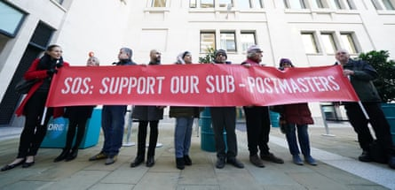

The police criminal inquiry into the Post Office Horizon IT scandal is investigating more than 45 individuals, with seven formally identified as main suspects.
The investigation, which the police described as unprecedented in size and scale, is the first to examine potential offences of perjury and perverting the course of justice by those who made “key decisions” on Post Office investigations and supporting prosecutions of branch-owner operators.
The police would not reveal the names of the seven suspects, but four of them have been interviewed. The number of formal suspects is expected to rise.
More than 900 post office operators were prosecuted by the Post Office between 1999 and 2015 because of faulty Horizon accounting software that made it look as though they had been committing fraud.
The scandal, widely considered to be the most widespread miscarriage of justice in UK history, was the subject of the critically acclaimed ITV drama Mr Bates vs The Post Office , which aired last year and thrust the scandal into the national spotlight.
The government introduced unprecedented legislation in March 2024 to exonerate people who had been wrongly prosecuted.
According to the latest official figures, just over £1bn has been paid out in compensation to more than 7,300 claimants across the four redress schemes up to 2 June.
Protesters stand outside the International Dispute Resolution Centre in London. They say compensation for the victims of the scandal is being distributed too slowly.Photograph: Kirsty O’Connor/PA
A second phase of the police inquiry, which is being developed concurrently, is looking at “wider offences” and decision-makers involved more broadly at the Post Office, as well as Fujitsu, which developed the Horizon accounting software.
Since December, when the police last gave an update on the progress of the nationwide taskforce of 100 officers and staff, the number of documents being reviewed has ballooned from 1.5 million to 6 million.
“Our contact with the many people affected by the Post Office Horizon scandal continues to increase,” said Stephen Clayman, the Metropolitan police commander overseeing the investigation.
“To date, four individuals have been interviewed. Two in late 2021, one in late 2024 and most recently one in early 2025. Formally identifying a suspect and preparing to question them takes a significant amount of time due to the volume of material and inquiries necessary, so these numbers will continue to rise as the team’s work progresses.”
The police, who began the Operation Olympos investigation in 2020 and by May last year had become a team of 80 , have previously said that prosecutions are not expected to reach trial until 2027.
No decisions on charges will be made until the publication of Sir Wyn Williams’ two-year public inquiry into the Post Office and the Horizon IT scandal, the first part of which is due to be announced in the second week of July.
The overall investigation will look at the actions of executives, investigators, managers, legal teams as well as executive oversight by the board and civil servants.
The police said that they were not conducting a reinvestigation of the wrongful prosecutions. “The offences under investigation are against the Post Office,” the said in a statement.
Clayman added: “We all have a personal commitment to this investigation which goes far beyond documents and evidence. It is about the thousands of lives the Post Office Horizon scandal has impacted and we remain focused on our goal of securing justice for those affected.”